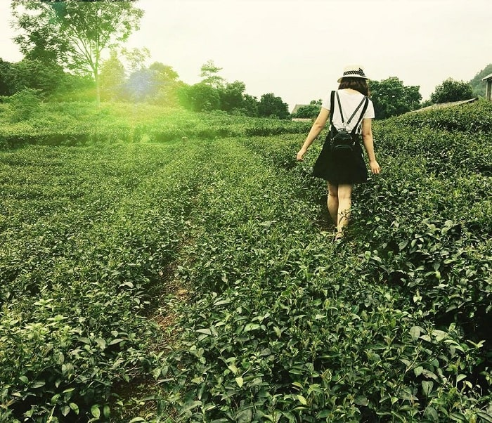

Đây sẽ là một chuyến đi tuyệt vời để bạn dành tặng cho chính mình trong dịp hè này. Nơi đây khí hậu mát mẻ, trong lành nên khi đặt chân tới đây bạn sẽ cảm thấy rất thoải mái, thư thái và dễ chịu.
Ngoài việc được biết tới là vùng đất thanh bình có rất nhiều cảnh sắc thiên nhiên tươi đẹp thì Thái Nguyên còn được biết tới với hình ảnh những đồi chè Tân Cương xanh mướt mắt. Đây chính là một trong những điểm nhấn khiến cho du lịch Thái Nguyên ngày càng có sự cuốn hút hơn đối với du khách.
Rất nhiều người muốn tới đây khám phá cảnh sắc thiên nhiên tươi đẹp của vùng núi đồi này. Bởi không có gì tuyệt vời và hạnh phúc bằng khi được đắm chìm trong sắc xanh nhẹ nhàng, dịu mát mà thiên nhiên ưu ái dành tặng cho nơi đây. Hình ảnh đồi chè xanh tươi mướt mắt sẽ giúp bạn cảm thấy thư thái tâm hồn hơn.
Bất cứ ai khi tới xã Tân Cương thuộc phía Tây của thành phố Thái Nguyên cũng phải trầm trồ bởi nơi đây quá đỗi đẹp và cuốn hút. Đồi chè tại đây được trồng trên khoảng diện tích rất rộng. Theo ước tính cụ thể là khoảng 1300ha. Do đó, khi đặt chân tới vùng đất này, bạn sẽ cảm thấy vô cùng thích thú. Bởi cảnh sắc thiên nhiên nơi đây vô cùng xanh mát và có sức hút rất riêng.
Cũng bởi khoảng cách từ trung tâm thành phố tới đồi chè Tân Cương không quá xa nên việc đi lại và di chuyển cũng trở nên đơn giản và dễ dàng hơn. Bạn chỉ phải đi khoảng 10km là có thể tới được khu đồi chè này tham quan. Chính vì thế, khi có dịp tới Thái Nguyên du lịch, bạn nhất định không thể bỏ lỡ một địa điểm đẹp như khu vực đồi chè ở Tân Cương.
Cảm giác khi tới đây du lịch thật mới lạ. Nó khác hẳn với những địa điểm du lịch Thái Nguyên khác. Bởi nơi đây không khí xanh trong, mát mẻ. Tất cả mọi nơi đều ngập tràn trong sắc xanh tươi mát của cỏ cây, của đồi chè nên khi tới đây tâm hồn bạn sẽ cảm thấy khoan khoái hơn. Dường như mọi khó khăn, bộn bề của cuộc sống thường ngày cũng dần theo đó mà tan biến hết. Chính bởi cảm giác này mà ngày càng có nhiều người muốn tới đây trải nghiệm hơn.
Cứ đến đây đi rồi bạn sẽ hiểu tại sao một vùng đất bình yên lại có sức hút lớn đến như vậy? Bởi nơi đây mang lại cho bạn những cảm nhận hoàn toàn khác biệt với các địa điểm du lịch khác. Buổi sáng khi thức dậy tại nơi đây, bạn sẽ được ngắm nhìn cuộc sống bình dị của người dân nơi đây. Cuộc sống của họ thật bình yên. Cứ mỗi buổi sáng, họ lại thoăn thoắt làm các công việc thu búp chè vừa mập vừa xanh tốt.
Đặc biệt, khó có nơi nào tại Thái Nguyên lại mang tới cho bạn cảm giác nhẹ nhàng, khoan khoái như ở đây. Bởi không khí nơi đây luôn rất trong lành và mát mẻ.
Hình ảnh đồi chè xanh mướt chạy dài tít tắp trông mới đẹp làm sao? Dường như thiên nhiên đã rất ưu ái ban tặng cho nơi đây vẻ đẹp vô cùng cuốn hút từ chính những điều được coi là bình dị nhất. Việc được ngắm nhìn đồi chè Thái Nguyên xanh mướt còn dính nguyên hạt sương mai trông mới đẹp nhường nào? Tất cả tạo nên một bức tranh thiên nhiên vô cùng thơ mộng và lãng mạn, nhẹ nhàng.
Không gian đồi chè Tân Cương sẽ là nơi để du khách thỏa sức chụp ảnh và check in. Rất nhiều bạn trẻ chọn lựa khu vực đồi chè này để chụp ảnh. Bởi cảnh sắc nơi đây sẽ là bức phông nền tuyệt vời để giúp bạn có được những bức ảnh đẹp nhất cho chuyến đi du lịch Thái Nguyên của mình.
Ngoài việc ngắm cảnh sắc thiên nhiên tươi mát của nơi đây, bạn còn có thể tự mình tham gia một trải nghiệm vô cùng thú vị đó là vào vai người nông dân thu hoạch chè và trực tiếp tự hái chè sau đó mang đi chế biến. Chắc chắn, cảm giác được thưởng thức ly chè xanh mát do chính tay mình thực hiện sẽ rất ngon và tuyệt vời. Hương vị cũng rất khác biệt. Dường như hương vị của trà cũng thơm và quyến rũ hơn.
Hy vọng những cảm nhận bên trên vể đồi chè Tân Cương sẽ giúp bạn hiểu rõ hơn về địa điểm du lịch Thái Nguyên này. Để từ đó nếu có dự định lên kế hoạch đi tham quan đồi chè ở Tân Cương, bạn cũng sẽ không còn bị bỡ ngỡ. Chúc bạn có chuyến đi khám phá Thái Nguyên thật vui vẻ.
Vì nằm cách thành phố không quá xa nên việc di chuyển tới đồi chè Tân Cương cũng rất thuận tiện và dễ dàng. Bạn có thể lựa chọn phương tiện xe khách hay xe máy đều được. Bởi quãng đường đi tới đây cũng rất dễ đi.
Dù là lần đầu tới Thái Nguyên du lịch, bạn cũng sẽ không phải lo không biết đường đi tới khu vực đồi chè này. Bởi bạn có thể dùng google maps hoặc hỏi đường người dân là có thể dễ dàng tới đây mà không gặp bất cứ cản trở nào?
Đặc biệt, đối với những người yêu thích đi phượt và muốn được rong ruổi trong những chuyến đi khám phá thì xe máy sẽ là sự lựa chọn lý tưởng nhất để bạn có thể khám phá vẻ đẹp của khu vực đồi chè này. Nếu xuất phát từ Hà Nội, bạn có thể đi theo đường cầu Nhật Tân. Sau đó chạy dọc theo quốc lộ 3 là có thể tới được địa bàn của Thái Nguyên. Tiếp tục hành trình sẽ đi tiếp theo tuyến đường Quang Trung là có thể tới được xã Tân Cương.
Ngoài ra, nếu bạn muốn đi xe khách thì cũng có rất nhiều nhà xe chuyên cung cấp lộ trình tuyến Hà Nội Thái Nguyên. Do vậy, bạn chỉ cần dựa vào thời gian di chuyển để lựa chọn xe đi Thái Nguyên cho phù hợp.